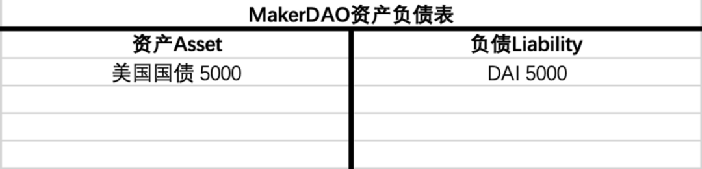

NO.4
Jun.
自从2020年MakerDAO将RWA（现实世界资产）正式纳入战略发展方向之后，MakerDAO前前后后已经买下近12亿美国国债，为什么去中心化世界的DeFi协议要引入现实世界的资产？这背后有何用意？引入美债后创造DAI（MakerDAO推出的代币）和美联储创造货币性质一样吗？
歪脖三观
文/ DrSamo （Twitter: @BirkSamo）
菠菜菠菜！(歪脖三观签约作者)
编辑/ 卡卡
封面图源/ CRYPTOSLATE
作为 DeFi（去中心化金融）界的领头羊，MakerDAO 一直对美国国债心心念念。
在去年 10 月购买了 5 亿美元的美国债后，它又在前几日买了 7 亿美元，目前其持有的美国债已经超 12 亿美元了。
我们知道，今年2月，MakerDAO投票批准了一项提案，允许其投资不超过 12.8 亿美元的美国国债。那么问题来了，作为最大的DeFi协议之一，它为何如此热衷于投资美国国债？这个动作意味着什么？MakerDAO是否拥有了主权国家的造币能力？
要回应这些问题，我们需要从货币的本质说起。
01
有一句流传很广的话叫“货币的本质是信用”，但许多人可能知其然而不知其所以然。
我们想引用翟东升教授著作《货币、权力与人》中的话来展开解释：“货币是由三种基本要素所构成的一套社会协作体系和公共产品。”
国家法律支持的一种抽象价值单位：
货币作为一种抽象的价值单位，其价值并不来源于它本身（例如，一张纸币的制作成本远低于它所代表的价值），而是来源于人们对它所寄予的信任。这种信任在很大程度上是由国家法律所赋予和保障的。
因此，当我们说货币是由国家法律支持的一种抽象价值单位时，我们实际上是在强调货币的法定地位，以及这个地位如何帮助维护货币的价值和信用。
一个社会成员相互交易时跟踪和记录信用或债务余额的记账体系：
在古代的贸易系统中，没有货币的情况下，人们可能是通过物物交换的方式进行交易，比如，我给你一只鸡，你给我一袋米。
然而，这种交易方式有一些显而易见的问题。首先，我们需要找到具有相互需求的交易伙伴，这在很多情况下是非常困难的。其次，我们需要确定交换比率，也就是说，一只鸡值多少袋米？这也是一个很复杂的问题。
为了解决这些问题，人们发明了货币。货币可以被看作是一种记账体系，它可以帮助我们跟踪和记录信用或债务余额。比如，如果你为我提供了一项服务，但你可能不会马上要求我为你提供等价的服务。相反，我可能会给你一张债务证明，也就是货币，标明我欠你一项服务。在未来的某个时间，你可以使用这个债务证明让我或其他接受这个证明（货币）的人为你提供等价的服务。
这样一来，整个交易就变得更加简单和有效，价值的衡量和转移也变得更加容易。
债权人将特定债权关系转移到第三方的标准化表征（Token）：
要理解这一点，我们可以借用一个简单的类比来阐释。
假设我们在一个小岛上，你今天帮我种植了谷物，我可能会欠你一个债务，比如说我承诺在将来的某一天帮你捕鱼。但是，这种债务关系很难管理，因为我们需要记住谁欠谁什么，以及这个债务何时可以偿还。
为了解决这个问题，我们可以引入一种标准化的表征或记号（Token）来代表这种债务关系，这就是货币。比如说，我可以给你一个贝壳，这个贝壳代表我欠你的债务。你可以随时用这个贝壳来向我索要我欠你的捕鱼服务，或者你也可以将这个贝壳交给岛上的其他人，让他们向我索取服务。这样，贝壳就成了债权人将特定债权关系转移到第三方的标准化表征。
在现代社会，我们使用的货币也是同样的原理。当你持有一张 100 美元的钞票时，实际上你拥有的是一种债权（现金对于发行它的央行来说是一种债务），这种债权可以让你向社会索取一定价值的商品或服务。你也可以将这张钞票交给别人，将这种债权转移到他们身上。
这就让我们能够更有效地管理和转移债务关系，所以当我们理解货币的本质是信用这句话时，我们可以把货币的本质看成是一种可转让的债或可转让的信用。
如果我们进一步去了解货币的创造过程，你将会对“货币的本质是信用”有更深一层的理解。
02
一 货币的种类：高能货币和信用货币
货币通常分为两大类：高能货币（Base money）和信用货币（Credit Money）：
高能货币，又称基础货币或中央银行货币，是由中央银行直接发行的，有着最终支付能力的货币。这包括我们日常生活中使用的硬币和纸币，以及存储在中央银行账户中的商业银行储备。因为其支付能力的终结性，它通常被视为货币供应的基础。
信用货币，这种货币形式主要是由商业银行通过贷款和存款活动创造的。当一个银行对一个客户发放贷款时，它实际上是在创造新的货币。
在现代货币体系中，绝大部分的货币是信用货币，换句话说，在现实世界中的绝大部分货币都是由商业银行创造出来的而不是央行。
例如，当一个人向商业银行存入 1000 美元，银行需要将其中的 10% 存入央行作为储备（假设存款准备金率为 10%），然后将剩下的 900 美元作为贷款发放出去。当这 900 美元最终被存入另一家商业银行，那么该银行可以再次按照 10% 的存款准备金率，储备 90 美元，将 810 美元作为贷款发放出去。
这个过程可以反复进行，每一轮都会创造出新的货币。但它们的总额是有限的，因为每一轮贷款的金额都会逐渐减少。
二 中央银行-商业银行的二元结构
在现代货币体系中，中央银行和商业银行共同构成了一种二元结构，这种结构旨在平衡货币的发行和流通。
中央银行在货币体系中起着极其关键的角色。中央银行负责制定和执行货币政策，控制基础货币的供应，调控经济中的利率水平，以及维护金融市场的稳定。中央银行通过公开市场操作，如购买或卖出政府债券，来影响货币供应。
当中央银行购买政府债券时，它向市场注入基础货币，增加了货币供应；反之，当中央银行卖出政府债券时，它则是从市场吸收基础货币，减少了货币供应。此外，中央银行还会设定存款准备金率，即商业银行在中央银行或其自身必须保留的存款的比例，以影响商业银行的货币创造能力。
商业银行则是货币创造的主要来源。商业银行通过接受存款和发放贷款来保持业务运转。当商业银行发放贷款时，它实际上创造了新的货币，因为贷款金额被添加到借款人的银行账户中，从而增加了经济体中的货币供应。
这种中央银行和商业银行的二元结构使得货币体系能够保持灵活性和稳定性。央行通过调整货币政策，能够控制基础货币的供应，从而影响经济的整体利率水平，帮助经济应对通货膨胀或通货紧缩等风险。
商业银行则通过贷款活动，能够调整信用货币的供应，以满足经济活动中的资金需求。同时，由于商业银行受到央行货币政策和巴塞尔协议等多重因素的影响和约束，其创造货币的能力并不是无限的。这也就避免了货币供应过度扩张，导致通货膨胀或金融泡沫的风险。
三 货币创造的过程
为了更直观的体现出货币被创造的过程，使用资产负债表是一个非常好的工具，观察资产负债表的变化为我们提供了一个深度洞察金融行为的放大镜（为方便理解，以下图表均为简化模型）。
中央银行创造货币：以美联储为例，美联储通常是通过公开市场操作来创造美元的，公开市场操作可以理解为美联储去向市场交易对手方购买资产（如国债等），然后美元就被“凭空”创造出来了。在疫情期间我们经历的美联储“大放水”，其实就是美联储在市场上疯狂购买各种资产然后将美元撒到市场中去。
假设美联储向商业银行购买了 5000 美金的国债，那么在资产负债表上呈现的变化就是：
美联储购买 5000 美金的国债时，美联储资产负债表的资产端多出了 5000 美元的债券，负债端则多出了 5000 美元的高能货币，此时高能货币就被“凭空”创造了出来，市场上从此多了 5000 美元的流动性。
我们从美联储资产负债表中看到了美元被创造的过程，而这一过程使得美联储的资产负债表扩张了，市场上的美元流动性增加了，这叫“扩表”。相信大家也经常听到“缩表”这个词，所谓“缩表”、“扩表”中的这个表指的就是资产负债表。
最近大家常听到的加息缩表其实就是美联储要收回市场上的美元流动性，既然美联储购买资产可以创造美元，那么反过来说美联储出售资产就可以“销毁”美元，这也就会导致资产负债表的缩减，达到减少美元供应的效果。
商业银行创造货币：对于商业银行来说，货币的创造是通过贷款过程实现的。假设储户向商业银行存入了 5000 美元，此时这 5000 美元存款对于储户来说是资产，对商业银行来说却是负债，因为它需要向储户不断支付利息。
商业银行当然不会只拿着储户的存款，它为了获得利润，会以高于存款利息的利率发放贷款，获得存贷利差作为利润。假设该银行准备发放 5000 美元的存款，你会发现这个过程没有想象中的一笔现金的转移，商业银行只是在资产负债表上凭空加上一笔贷款和存款，新的货币就这么诞生了（当然它还需要向央行存入一笔存款准备金）。实际上，绝大部分的银行存款都是银行自己创造出来的，这些就是信用货币。
而商业银行可以将这个过程继续重复下去，每一轮都会创造新的货币。因此，虽然初始的高能货币仅有 5000 美元，但通过商业银行的存贷活动，总的货币供应往往会远超过这个数额，这就是所谓货币乘数的效果。假设存款准备金率为 10%，当这 5000 美元的高能货币全部回到商业银行在央行的储备金账户时，它所对应的存款最终会变成 5 万美元，扩张了 10 倍。
所以到最后你会发现，商业银行由于可以凭空创造“货币”，但是人们可以取出来的货币（高能货币）远远比不上被创造出来的货币（信用货币），这有点像在进行“十个瓶子九个盖”的游戏，也是为什么任何一个诚实经营的银行都经不起银行挤兑的原因。
在现代信用货币体系成熟之前，任何国家都可能随意滥发货币。而现在的法币发行体制把新货币的发行与主权国家的债务进行绑定，每一枚高能货币的背后都对应着等额的国债，而国债是需要支付利息的，从而让增发货币变成一件有代价的事情，理论上可以以此限制政府滥发货币的冲动。
但美联储通过购买国债创造货币这件事情上，你会发现如果美国财政部不断发行新国债借新还旧，美联储不断用新鲜的美元购买然后支付利息，这岂不是美国政府仍然想印多少钱就能印多少钱？
现代信用货币体系在这里其实实行了一种分权制衡机制，美联储可以无限印钱，但没有随意花这些钱的权利；美国财政部没有印钱的权利，但有发行国债的权利。财政部仍然需要以市场利率来借得资金，滥发国债会导致借贷成本上升。同时，美国财政部发行国债还存在法律上的债务上限。
然而，现代货币体系虽然做了一定的制度设计来防止主权政府滥发货币，但实践中仍然有“不断借新还旧”来规避发债成本的漏洞，而美国历史上多次触及债务上限时，最终总是以最后时刻提高债务上限为结局。
整个现代货币体系本质上仍然是一场击鼓传花的游戏，国债是需要偿还利息的，偿还不了怎么办？还要花钱怎么办？继续印钱还利息继续花。当然如果你是委内瑞拉之类的小国，这种借新还旧滥发货币的行为只能导致本币贬值，并不能解决外币债务。
但如果你的货币是全球最强势的硬通货，并且借新还旧不会有一个更大的强权让你付出任何额外代价的话，那么就会借钱一时爽，一直借钱一直爽。看到这你会发现现代货币背后的锚其实就是债务，而债务可以理解为是一种信用，看到这你会更深的理解到“货币的本质是信用”这句话。
03
一 MakerDAO运行原理
我们知道，MakerDAO 是一个运行在以太坊区块链上的、集超额抵押稳定币、借贷、存储、用户共同治理和发展的项目。MakerDAO 最核心的就是 Maker 协议，又称多担保 DAI（Multi-Collateral DAI）系统，可以让用户使用经过协议批准的资产作为担保物来生成去中心化稳定币 DAI，比如抵押 10000 美元的ETH生成6500美元的DAI。
2022年，MakerDAO 通过了一项提案，使用锚定稳定模块（PSM）中的资金去购买美国国债，这个提案对 MakerDAO 来说意义重大。
首先介绍一下PSM（Peg Stability Module），这是 MakerDAO 项目中的一个重要部分，主要功能是为了帮助 DAI 维持与美元的 1:1 锚定。
具体来说，PSM 的工作原理是这样的：当DAI的市场价格高于 1 美元时，套利者可以通过 PSM 将稳定币（目前只支持 USDC） 1:1 地换成 DAI，相当于以折扣价换得 DAI，然后在市场上以高于 1 美元的价格出售获取利润。反之，当 DAI 的市场价格低于 1 美元时，用户可以通过 PSM 将 DAI 以 1:1 的汇率换成美元稳定币，DAI 的流通量下降从而汇率上升回到 1 美元。这样的机制通过市场的力量自动调整 DAI 的供应量，保持其价格的稳定。
我们观察 2022 年 MakerDAO 的资产负债表可以发现，PSM 的资产几乎占据了 MakerDAO 一半以上的资产，而 PSM 中几乎都是中心化稳定币 USDC，这也意味着 DAI 其实某种程度上是 USDC 的套壳。
图源：MakerDAO
但是当 MakerDAO 开始购买美国国债之后，我们可以发现一个有趣的现象，那便是在 MakerDAO 资产负债表的资产端和负债端与美联储的资产负债表反映几乎一致（美国国债 ：美元高能货币 vs 美国国债 ：DAI 稳定币）：

那么问题来了：这是否意味着 MakerDAO 在分享过去只有美联储垄断的“基于美国国债创造货币”的权利？MakerDAO 购买美债到底意味着什么？
二 MakerDAO 是否在创造货币？
先抛出答案，MakerDAO 并没有创造货币，那么问题出在哪里？
作为稳定币发行商，MakerDAO拥有最简单的业务，收取客户的美元，对应 1:1 发行稳定币并负责承兑。类似 Circle 发行 USDC，Tether 发行 USDT，他们理论上不具备信贷扩张的能力，只是替客户保管美元，然后发行对应的美元稳定币。MakerDAO 发行 DAI 也与它们非常接近，特别是其 PSM 模块提供的 DAI 与 USDC 的 1:1 兑换服务，如果认为 USDC 是“美元代金券”，则 PSM 模块中的 DAI 也可以被认为是“USDC 代金券”。
PSM 模块在流动性好的时候非常具有迷惑性，它持续地提供了 DAI 和 USDC 之间稳定的流动性。但本质上它是一个“储备金库”，当所有的人都希望将自己手里的 DAI 通过 PSM 模块 1:1 换成 USDC 时，显然这个金库是会枯竭的。
这个储备金库里的 USDC 是属于 MakerDAO 所有，但 MakerDAO 没有借贷协议，没有信贷扩张的能力，它不能也不应该将这笔 USDC 重新放贷出去，而应将这些 USDC 锁死，只有在提供 DAI 与 USDC 1:1 兑换时才动用，正如 Circle 不能轻易动用客户的美元一样。
那么MakerDAO 购买美国国债的钱是哪儿来的？
你直接拿 DAI 去买美国国债，人家是不认的。MakerDAO 是将储备中属于 DAO 国库的 USDC 换成了美元，然后购买的美国国债。
理解了基于“央行-商业银行”的现代信用货币体系，我们可以看到第三个角色——稳定币发行商发行货币的过程是很不相同的。相较于央行凭空创造高能货币的能力，和商业银行通过贷款创造货币的扩张能力，稳定币发行商创造货币的能力可以说是微乎其微，它就像农夫山泉——我们不生产货币，我们只是货币的搬运工。
哪怕从更远的尺度看货币发行，稳定币发行商供应货币的方式也是完全不同的。在布雷顿森林体系时代，美国储备黄金发行的美元，渐渐玩上了十个瓶子九个盖的游戏，随着美元增发黄金储备流失，盖子的数量越来越少。
图源：Shutterstock / CryptoFX
当然如果单纯的只做好代金券稳定币，发行商们都要饿死了，所以我们也接受 Circle 将自己客户的一部分美元存款，置换成短期的美国国债。这本质上是将流动性更好的美元活期存款置换成了流动性不太好但有更高收益率的美债，好用收入支付公司的业务运营成本。MakerDAO 做的事情类似，就是将没有利息的 USDC 储备置换成了有利息的美债，以产生收入，养活协议。
这种行为会导致 USDC 现在也无法应对 100% 的挤兑（原先只享受活期存款利息时，理论上是可以的），也会使得 DAI 对 USDC 的锚定被削弱，本质上都是拿流动性换利润的行为，但比起十个瓶子九个盖，这更像是 100 个瓶子，99 个盖。
此外，从资产负债表的角度来看，DAI 对于 MakerDAO 来说是负债，PSM 模块中的 USDC 则是 MakerDAO 的资产。这个行为本质上是 MakerDAO 将资产负债表中的部分资产 USDC 置换成了另一种资产美国国债，这是任何一个公司或者说一个 DAO 非常正常的资产置换的过程，这个过程中既没有凭空创造新的 DAI，也没有把 DAI 作为高能货币进行信贷扩张来放大货币乘数。
综上所述，MakerDAO 并没有分享美联储创造货币的能力。特别是美元稳定币这种强势的有价值尺度功能的货币，是非常难以创造的。这也是 BTC 最初的理想，让去中心化的货币成为所有经济的锚定物，免除人们受主权政府滥发货币的剥削。即便是 BTC 在替代法币的征途上也仍是任重道远，DAI 在替代法币（或中心化稳定币）的征途上同样仍有很长的路要走。
三 MakerDAO购买美债到底意味着什么？
我们指出，MakerDAO 在资产端增加美债的过程中，负债端并未增加相应的 DAI，仅仅是资产的置换。
但换一种角度思考，是不是也可以认为之前有部分 DAI 的背书是储备的 USDC，而在置换之后，有部分 DAI 的背书变成了美国财政部发行的美国国债，从而享受了美国这个主权国家的信用背书？
这种背书的切换是成立的，而且类似的事情在现实世界里已经多次发生了。
掺杂美元背书的其它法币们
二战之后的欧洲各国
二战之后欧洲各国全部被打得满目疮痍，国库里既没有足够的黄金储备，政府也没有了足够的信用去发行债券，这对稳定本国货币来说是非常困难的，稍不留神就容易形成竞相贬值的多输局面。
当时美元站出来为世界经济充当了稳定的桥梁，美国储备黄金，各国储备美元，其实也是各国借用了美元的背书，为本国孱弱的法币增加了信用。
这个故事 Web3 化，美国储备黄金，就是 MakerDAO 超额抵押 ETH 等核心资产去铸造 DAI 呀；各国储备美元，就是 DAI 储备 USDC 呀。
改革开放之后的中国
经济的发展需要资本，而当时中国的资本非常稀缺，又不能乱印钱以免导致通货膨胀。如何解决新发行人民币以何为锚的稳定性问题呢？
同样也是储备美元为人民币增信，中国开始提倡引进外资，而外资（主要是美元）进入中国后是不能直接流通的。实际的流程是外汇管理局收下美元，然后按汇率定向增发人民币交给要投资的外商，外商拿着人民币在境内投资。中国加入 WTO 之后这种趋势更是快速增长，使得很大一部分的新发行人民币的背书其实是美元。当然外汇管理局拿着美元也不可能坐等贬值，买了大量美债赚取利息的同时，也是通过美元和美债，为人民币间接引入了美国政府的信用做背书。
这个故事 Web3 化，定向增发的 RMB 不就可以理解为是一种被包装的美元（Wrapped USD）吗？这些通过储备美元而发行的 RMB 借用了美元的信用。
实行联系汇率制度的国家和地区
最典型的就是香港，联系汇率制度自 1983 年在香港实施，以百分百外汇储备保证，使港元汇率保持稳定在 7.75 至 7.85 港元兑 1 美元的区间内。港元将自己变成了美元的代金券，只不过不是 1:1 的而已。
香港的金管局在正常情况下不会干预汇率波动，由三家发钞银行（中银香港、香港上海汇丰银行、渣打银行）进行套利活动稳定汇率，当港元即将超出 7.75 至 7.85 的窄区间时，金管局则会动用美元储备购买港元或者抛售港元换取美元，用两个方向的手段强行锁定两种货币的汇率。
这个故事 Web3 化，1983 年前的存量港元是金本位的，就像此前借助超额抵押发行的 DAI；三家发钞行的套利行为就是链上套利机器人在努力搬平 DAI 与其它稳定币的差价；而香港金管局的角色，则相当于 MakerDAO 的 PSM 模块。
货币背书的两种形式
以硬通货（当今主要是美元）、贵金属（主要是黄金）背书的部分为“硬背书”。
小国以本国信用做背书的部分，则相对较弱，可以被称为“软背书”。
几乎所有的小国法币们做的事情，都是借助储备里“硬”的部分提升自己本币的“成色”，然后又在其中悄悄掺入较“软”的本国信用进行稀释，收取“铸币税”。
如果本身是不负责任的国家，如委内瑞拉，它也有一定的硬通货外币储备，但在疯狂掺水在货币面值上加了几个 0 之后，那一点点硬的成份也就毫无意义了。那样的恶性通胀无法解决外币债的问题，只能收割本国的民众。
如果是自身比较负责任的国家，则可以充分享受货币中“硬背书”的好处，保持币值相对稳定的情况下慢慢掺入自身“软”的成份，完成自身信用的渐进式扩张。就像贵金属本位时代的罗马，在帝国末期不断掺水降低金银币的成色，持续收铸币税收了一百多年。
DAI 就是小国法币
超额抵押生成稳定币的问题在于底层资产币价快速波动时，大规模清算活动可能导致 DAI 的汇率和发行量的波动，并且货币供应量增长的速度也相对较慢。对 DAI 来说，这种“硬掺硬”的意义，更多地是借助海量的美元流入去中心化世界的东风，快速增加 DAI 的发行量（通过 PSM 模块 100% 储备增发），并增加 DAI 的汇率稳定性。
依靠外来信用实现发行量快速增长的意义非常重大。黄金渐渐退出国际贸易结算货币的原因之一，就在于工业革命之后现代社会的生产力爆炸性增长。相对于商品和服务的快速增加，黄金作为货币的供应量增长速度跟不上，结果形成了通缩的趋势。通缩与恶性通胀一样，对经济来说都是非常糟糕的事情。DAI 除了保持自身锚定的稳定之外，能在整个加密货币市场规模增长时也相应增加发行量匹配需求，也是非常重要的能力。
储备多样性的意义
增加 USDC 储备：在真实世界的美元通过稳定币不断涌入加密世界的时候，DAI 也获得快速增加供应量的能力。不再受限于此前用 ETH 等主流加密货币作为超额抵押时，供应量扩张速度较慢的困境。
增加美国国债储备：跳过 Circle 的中介，直接享受美国财政部发行的美债的背书，若当初置换了更多的美国国债为DAI背书，那么在上次 USDC 被挤兑的危机中，DAI 所收到的冲击也会更小，这就是储备多样性对汇率稳定起到的积极作用。
在 MakerDAO 的资产种类中我们也能清晰地看到真实世界资产 RWA(如美国国债等资产)的比重正在不断增加，对稳定币资产的依赖越来越少。
图源：Dune
04
从两个角度分析完“MakerDAO 是否分享了美联储创造货币的能力”这个问题后，我们可以发现它的答案已经不再重要。MakerDAO 购买美债的行为，是它作为 DAI 的“央行”，对自己资产负债表中资产端所配置的资产进行了置换，而这种置换能力才是最关键的。
其实现实世界里的各国央行，也具备选择自己所配置的资产的能力。如 2008 年为了拯救次贷危机，美联储开始接受住房抵押证券 MBS 进入自己的资产端；日本央行则非常神奇地通过信托基金持有了大量日企股票作为资产，以至于日本央行成为了很多大企业的最大单一股东。
总结下来，MakerDAO 购买美元国债的意义在于 DAI 可以借助外部信用的能力使其背后支持的资产多元化，并且借助美国国债带来的长期额外收益可以帮助 DAI 稳定自身汇率，增加发行量的弹性，并且在资产负债表中掺入美国国债的成份可以降低 DAI 对 USDC 的依赖程度，减少单点风险，综合下来是有利于其发展的，我们期待它在去中心化稳定币的发展进程中取得更大的成就。
声明：我们欢迎任何机构转载文章，转载时请务必保留作者、作者介绍、歪脖三观介绍。转载请联系：tiaodengzhiye1（微信ID）。
热
往期精彩文章
HOT！